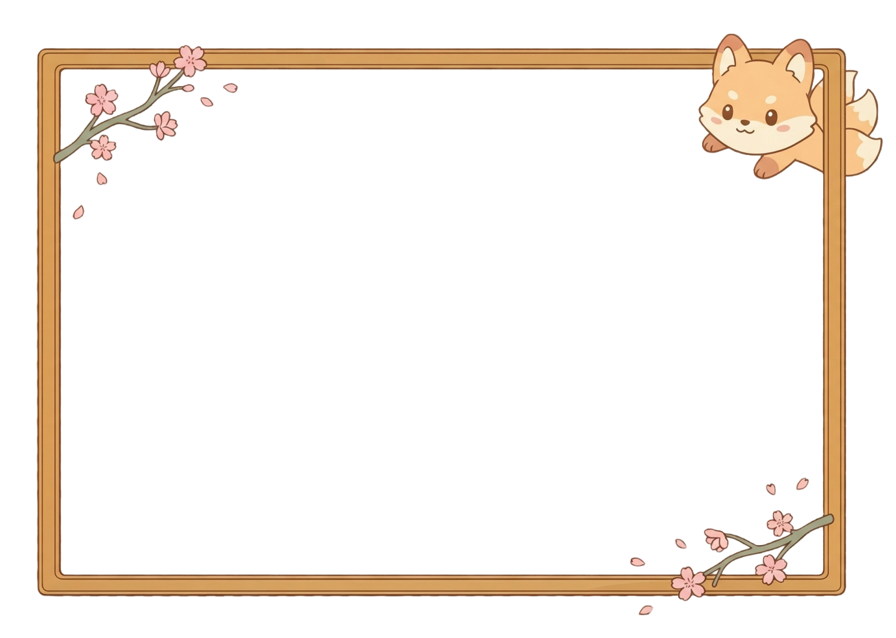

a little record, kept for you
Romi in Japan
April 2027 — a year and a half in Nagoya, told one stamp at a time. Click a mark on the map, or scroll through everything below.
Journal Entries

Photo Gallery
the whole trip, at a glance